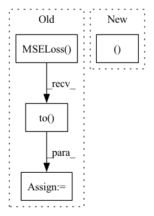

Pattern ID :30323

Before Change
train_dataset = torch.utils.data.TensorDataset(x_seq, target_seq)
train_loader = torch.utils.data.DataLoader(train_dataset, batch_size=batch_size, shuffle=shuffle)
criterion = torch.nn.MSELoss().to(device)
for batch_data in train_loader:
encoder_inputs, labels = batch_data
outputs = model(encoder_inputs, edge_index)
assert outputs.shape == (batch_size, node_count, num_for_predict)
After Change
train_loader = torch.utils.data.DataLoader(train_dataset, batch_size=batch_size, shuffle=shuffle)
for batch_data in train_loader:
encoder_inputs, _ = batch_data
outputs1 = model(encoder_inputs, edge_index_seq)
outputs2 = model(encoder_inputs, edge_index_seq[0])
assert outputs1.shape == (batch_size, node_count, num_for_predict)
In pattern: SUPERPATTERN
Frequency: 3
Non-data size: 4
Instances
Fragment ID: 89776373
Project Name: benedekrozemberczki/pytorch_geometric_temporal
Commit Name: 8efa512ff3ac06546a082de036a85428720abd7a
Time: 2021-03-20
Author: He_YX@outlook.com
File Name: test/convolutional_test.py
M Class Name: AnonimousClass
N Class Name: AnonimousClass
M Method Name: test_mstgcn(0)
N Method Name: test_mstgcn(0)
M Parent Class:
N Parent Class:
M File Name: test/convolutional_test.py
N File Name: test/convolutional_test.py
M Start Line: 291
M End Line: 328
N Start Line: 293
N End Line: 311
'>
Before Change
train_dataset = torch.utils.data.TensorDataset(x_seq, target_seq)
train_loader = torch.utils.data.DataLoader(train_dataset, batch_size=batch_size, shuffle=shuffle)
criterion = torch.nn.MSELoss().to(device)
for batch_data in train_loader:
encoder_inputs, labels = batch_data
outputs = model(encoder_inputs, edge_index)
assert outputs.shape == (batch_size, node_count, num_for_predict)
After Change
train_loader = torch.utils.data.DataLoader(train_dataset, batch_size=batch_size, shuffle=shuffle)
for batch_data in train_loader:
encoder_inputs, _ = batch_data
outputs1 = model(encoder_inputs, edge_index_seq)
outputs2 = model(encoder_inputs, edge_index_seq[0])
assert outputs1.shape == (batch_size, node_count, num_for_predict)
'>
Fragment ID: 89776372
Project Name: benedekrozemberczki/pytorch_geometric_temporal
Commit Name: 8efa512ff3ac06546a082de036a85428720abd7a
Time: 2021-03-20
Author: He_YX@outlook.com
File Name: test/convolutional_test.py
M Class Name: AnonimousClass
N Class Name: AnonimousClass
M Method Name: test_astgcn(0)
N Method Name: test_astgcn(0)
M Parent Class:
N Parent Class:
M File Name: test/convolutional_test.py
N File Name: test/convolutional_test.py
M Start Line: 248
M End Line: 285
N Start Line: 236
N End Line: 266
'>
Before Change
psnr_criterion = nn.MSELoss().to(config.device)
pixel_criterion = nn.MSELoss().to(config.device)
content_criterion = ContentLoss().to(config.device)
adversarial_criterion = nn.BCEWithLogitsLoss().to(config.device)
After Change
content_criterion = ContentLoss().to(config.device)
adversarial_criterion = nn.BCEWithLogitsLoss().to(config.device)
return psnr_criterion, content_criterion, adversarial_criterion
def define_optimizer(discriminator: nn.Module, generator: nn.Module) -> [optim.Adam, optim.Adam]:
'>
Fragment ID: 89776374
Project Name: lornatang/srgan-pytorch
Commit Name: 197c3aeb5765ec31448fa10092752666f5ffaed2
Time: 2021-12-14
Author: liuchangyu1111@gmail.com
File Name: train_srgan.py
M Class Name: AnonimousClass
N Class Name: AnonimousClass
M Method Name: define_loss(0)
N Method Name: define_loss(0)
M Parent Class:
N Parent Class:
M File Name: train_srgan.py
N File Name: train_srgan.py
M Start Line: 146
M End Line: 151
N Start Line: 145
N End Line: 149